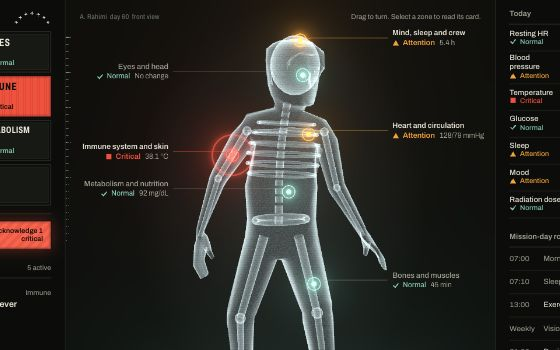
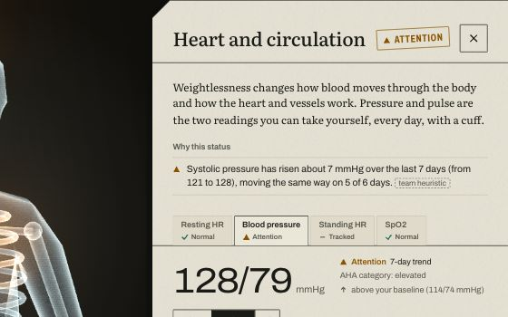
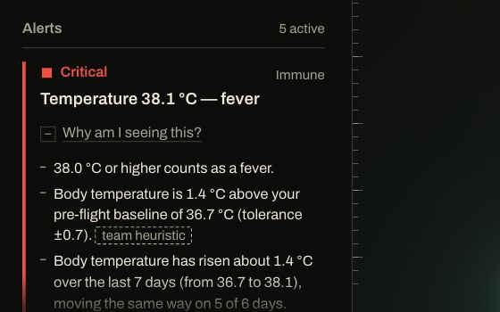
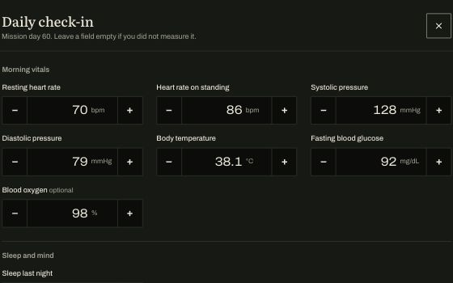
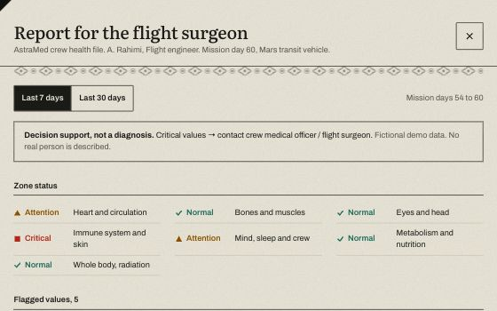

A health file the crew can read without Earth
AstraMed is an offline self-assessment health monitor for a crew member on a long mission. This guide explains the problem it answers, how it decides, where every number comes from, and how to test it yourself in three minutes.
Decision support, not a diagnosis. Critical values → contact crew medical officer / flight surgeon. Student hackathon prototype by team Lyra, made in Dushanbe, Tajikistan. Not a NASA product.
The problem
On long missions to the Moon and Mars, astronauts are exposed to space radiation, isolation, altered gravity and a closed, hostile environment. Medical help from Earth becomes slow or unavailable, so the crew must be able to assess their own health and act on it.
- 140 million miles
- average distance from Earth to Mars NASA Human Research Program
- 12.5 min
- for a signal to cross that distance one way calculated: distance ÷ speed of light
- about 3 years
- for a Mars mission, instead of a three-day trip to the Moon NASA Human Research Program
A question to a flight surgeon and the answer to it are then about 25 minutes apart, and during a blackout there is no answer at all. Self-assessment is the first line: the crew member needs a tool that says, in plain words, what is normal, what has changed and what to do next.
Five hazards, and what the tool watches for each
The NASA Human Research Program groups the dangers of human spaceflight into five hazards. They feed each other, so the tool shows combined risk and not only single values.
| Hazard | Why it matters for monitoring | In AstraMed |
|---|---|---|
| Space radiation | Cannot be felt; it needs instruments and dose tracking. | Whole-body zone: cumulative dose against the career limit. |
| Isolation and confinement | Mood, sleep and team tension must be tracked. | Mind zone: sleep, mood, team climate and the combined rule. |
| Distance from Earth | Delayed communication and no quick medical care; the crew must be self-sufficient. | Works with no connection; reports wait in a queue. |
| Gravity fields | Bone, muscle, balance and cardiovascular changes. | Heart zone, bones and muscles zone. |
| Hostile, closed environments | Infections, immune changes, fatigue. | Immune and skin zone: temperature and symptoms. |
What AstraMed does
-
One body, seven zones
A figure you can turn and select. Each zone is linked to risks from the NASA risk list and shows Normal, Attention or Critical, always as colour, icon and word together.

-
Your readings against your own baseline
Each reading is compared with a sourced reference range and with the crew member's own pre-flight values, so a number can be flagged while it is still inside the general range.

-
Alerts that explain themselves
Every alert opens to show why it fired and what to do now. Trends over seven days and a combined rule for sleep, mood and team climate catch slow changes.

-
A short daily check-in
A few typed readings and three one-tap scales. Impossible values are refused, an empty field is allowed. Streaks and badges keep the routine going without punishing a missed day.

-
A report that waits for the link
The report for the flight surgeon is built on the device as PDF and JSON. During a communication blackout it waits in a queue and is marked as sent when the link returns.

How it works
There is one path through the tool, and every step of it runs on the crew member's own device.
The four checks of the rules engine
- Reference range
- Is today's value inside the published range for an adult? The limits are read from one file,
data/thresholds.json, where each one carries its source and quote. - Personal baseline
- Is the value far from this person's own pre-flight value, even if it is inside the range? team heuristic
- Seven-day trend
- Has the value moved steadily in a bad direction over the last week? team heuristic
- Combined risk
- Are sleep, mood and team climate low together over three days? That raises one behavioral warning instead of three small ones. team heuristic
Data flow and privacy
There is no server, no account and no network request while the app runs. Readings are kept in the browser's storage on the device, one file per crew member, and stay there after a reload or with the network off. Two reasons led to this design. A crew far from Earth cannot depend on a connection, so the tool has to work alone. And an astronaut's medical data is sensitive, so it should stay local unless the crew member decides to send a report.
The same rule gives you control of your data: press the crew name in the top bar to open “Crew and data”. It exports everything to one JSON file, imports it again after checking every value, deletes a crew file from the device and resets the demo mission.
Sound
Sound is off until you switch it on with the speaker button. Nothing is downloaded: every tone is synthesised in the browser. A slow, quiet pad pulses at today's resting heart rate, and a short six-note motif plays when sound is switched on. Zones tick softly under the pointer, an opened zone card and a saved check-in each have a tone, and a Critical alert plays a two-tone signal once, which Acknowledge silences. Attention alerts make no sound, to avoid alarm fatigue. The sound pauses when the tab is hidden, and the choice is remembered on this device.
The rules
This table is generated from data/thresholds.json, the same file the rules engine reads, so it cannot drift from the app. Ranges are general clinical references for adults on Earth.
Rules made by the team
These rules implement features from the team concept. They are not medical standards, and the app labels them where they appear.
Science and NASA resources
Each resource is listed with exactly what it is used for. Quotes for every limit are in the app, on each zone card, and in SOURCES.md.
NASA resources
- NASA Human Research Program, 5 Hazards of Human SpaceflightThe framing of the problem, and the average Earth–Mars distance used to calculate the one-way signal delay.
- NASA Human Research Program, risk listThe risk names shown on each of the seven zone cards.
- NASA-STD-3001 Volume 1, Revision CThe career radiation limit of 600 mSv behind the Critical level of the whole-body zone, and the habitat design values of 1.3 and 0.9 mSv per day shown as context.
- NASA Science, Moon FactsThe Earth–Moon distance used to calculate the lunar signal delay.
- Radiation Assessment Detector on NASA's Curiosity mission (Southwest Research Institute release)Measured dose rates during the cruise to Mars and on its surface, used for the Mars environment.
- Barger and others, The Lancet Neurology, 2014 (NASA-funded)How much astronauts actually sleep in flight, shown as context on the sleep card.
Other sources
- American Heart AssociationResting heart rate range and blood pressure categories.
- MedlinePlus (U.S. National Library of Medicine), CDC, Mayo ClinicBody temperature and fever, pulse, blood oxygen, sleep duration.
- American Diabetes AssociationFasting glucose bands and low-glucose levels.
- Zhang and others, Science Advances, 2020Measured dose rates on the lunar surface and aboard the International Space Station.
- Canadian Space Agency, via the team conceptThe list of extra pressures on long missions that shaped the feature set.
Try it in 3 minutes
A script for judges and testers. It uses your own entries, not the demo, so you can see that the rules really run.
- Start a fresh crew file. Open the app, press the crew name in the top bar and choose “New crew file”. Type a name and pick Mars. The pre-flight baseline is optional: fill in the values you know, each is checked against the limits, and leave the rest empty.
- Enter a fever. Press “Daily check-in”, type 38.4 for body temperature and ordinary values for the rest, then save.
- See the alert. The Immune lamp turns Critical, the Master Caution bar lights, and an alert appears. Open “Why am I seeing this?” to read the limit and its source.
- Acknowledge. Press Acknowledge. The zone stays Critical, but the Master Caution bar goes quiet: you have seen it.
- Make a report. Press “Report for the flight surgeon”, then download the PDF or press “Send to the flight surgeon”.
- Switch Station, Moon, Mars. The signal delay and the radiation context change. Press “Earth link” to simulate a blackout: the next report waits in the queue until you restore the link.
- Go back to the demo mission. Press the crew name again and open A. Rahimi to see sixty days of history with a trend alert and the combined rule.
Validation
The rules engine is one file without any screen code, so it can be tested on its own. The unit tests run with node tests/rules.test.mjs and need nothing installed.
ok reference ranges: boundaries
ok blood pressure: AHA categories and tiers
ok all normal → no alerts, score 100
ok personal baseline: in range but far from own baseline → Attention
ok trend: steady drift inside the normal range → Attention
ok trend: noise without direction does not fire; improving direction does not fire
ok combined rule: sleep + mood + team climate low together → behavioral warning
ok chronic sleep shortfall (placeholder rule) → Critical
ok radiation: cumulative dose vs career limit, environment context
ok symptoms and exercise gap raise the right zone
ok score: 100 − 8 per Attention zone − 20 per Critical zone
ok validation rejects impossible values
ok demo story: day 60 shows all three tiers
13 tests passedLatest run: 15 November 2026. The tests check the logic of the rules. They do not show that the rules are medically right; that needs review by a flight surgeon and trials with real crews.
Limits and honesty
- It is decision support, not a diagnosis. For a Critical value, contact the crew medical officer or the flight surgeon.
- The app measures nothing. Every reading is typed in by the crew member.
- Reference ranges are general clinical references for adults on Earth. No spaceflight-specific ranges are published for most of them, which is why each reading is also compared with a personal baseline.
- Rules without a published source are labelled “team heuristic”. Numbers that could not be confirmed are labelled “placeholder — not verified”.
- The demo crew member, the mission and all sixty days of demo data are invented.
- The vision self-check is a screening prompt, not an eye exam.
- Sending a report is simulated. Nothing leaves the device.
- The tool has not been tested with real crews or reviewed by a physician.
Team and AI use
Made by team Lyra in Dushanbe, Tajikistan, for the NASA Space Apps Challenge 2026. The seven stars at the top of this page stand for the seven body zones, and they are a quiet greeting from home: the flag of Tajikistan carries seven stars too. The divider lines borrow their stepped diamonds from adras weaving and their rosettes from suzani embroidery.
The idea, the concept and the feature list belong to the team. The code, the visual design, the demo data and the documents were built with an AI assistant, Claude Code, and the team reviews them. The 3D body model, the typefaces and the libraries are the work of their authors and are listed with their licenses. The app contains no AI-generated images or audio files; its sounds are synthesised in the browser by code.
Full details: AI_USAGE.md, SOURCES.md and docs/TEAM_CONCEPT.md in the project folder.
Decision support, not a diagnosis. Critical values → contact crew medical officer / flight surgeon. Not a NASA product and not endorsed by NASA.